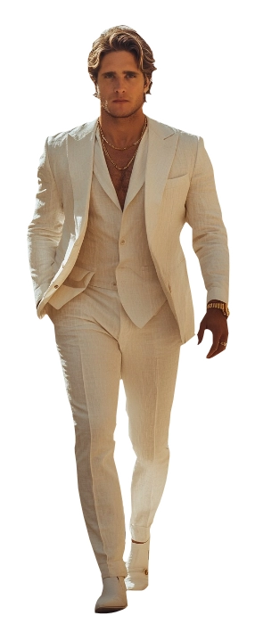
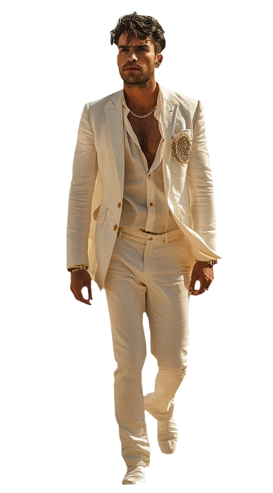
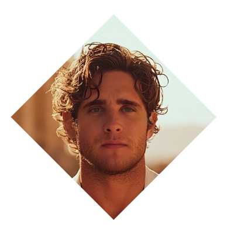

Adan Polo
Adan Polo
The Sun God
Adan Polo, the enigmatic figure embodying the essence of Apollo's reincarnation, navigates the realms of music and mystique. Born to illuminate the world with the transcendent power of melody, Adan faces his most profound challenge: an inexplicable dearth of inspiration. After traversing numerous trials and tribulations, the maestro stands at the precipice of a creative abyss, where the harmonies that once flowed effortlessly evade him.
Despite his celestial lineage, Adan grapples with the profound vulnerability of a creative soul in crisis. The symphony of his existence, once resplendent, now echoes the haunting silence of artistic struggle. In this cosmic confrontation, Adan Polo, the Apollo reborn, seeks to rekindle the celestial fire that defines his musical destiny. ❧
Plot Hooks.
Anything that has to do with Art. Seriously, whether it's photography or painting, dancing or music (his preffered art) the man is interested. He is not a Maecenas, though: expect him to confront you if you wish to pursue your goals under his tutelage. He's also interested in living grand and living well.Signature Motif.
Musical companionship. He will always have some sort of instrument, be strumming something or even humming a song while in his close presence. He is happy to sing also when prompted.Perfect for...
Divine and mystical threads. He is interested in making the most out of his life, so hedonistic pleasures are first. He is a great teacher, but expect him to be very strict and demanding. Worshiping and praising are the way to this Dom's heart.Goal
Inspiration.
Adan is currently on the look of an experience so profound, so enigmatic, so unraveling that it inspires him to write his next big hit that will topple that which he had already written in the past. A great story should do it...obstacle
Perfectionism.
...but he can't because his perfectionism is a denial mechanism to hide the fact he's human. He fears that the end result will not be perfect, so why bother? He's forgotten that an artist duty is self satisfaction.«Here comes the sun.»
Personal Data
⭮


Adan Polo Solares
Name
30
Age
09/Dec/1995
DOB
Cult of Ecstasy
Sect
Brown & Curly
Hair
Hazel
Eye color
Klubwerks
subgroup
Hispanic
Ethnicity
Mexican / British
Nationality
Recognized (III)
Status
1.75m
Height
82 kg
Weight
English and Spanish
Languages
Male
Gender
Homosexual
Preference
Composer
Profession
Top
Position
8" / 4.5"
length / Girth
Diego Boneta
Faceclaim
Adept
Rank
ENTP
MBTI
Character sheet
Attributes
Distinctions
skills
Paradigm
All the World's a Stage

Nature
Artist
Demeanor
Rogue


⭮
Charismatic
Independent
Stylish
Confident
Adventurous
Rebellious
Defiant
Dismissive
Different
Irresponsible
Independent
Stylish
Confident
Adventurous
Rebellious
Defiant
Dismissive
Different
Irresponsible
Creative
Expressive
Visionary
Inspirational
Intuitive
Eccentric
Self-absorbed
Unpredictable
Moodiness
Detached
Expressive
Visionary
Inspirational
Intuitive
Eccentric
Self-absorbed
Unpredictable
Moodiness
Detached
Strength

Dexterity
Stamina
Charisma

Manipulation
Composure
Intelligence
Wits
Resolve
Areté
🙪
Specialties
Music
Seduction
Motivation
Divination
Performance
Insight
Crafts
Expression
Occult
Empathy
Subterfuge
Archery
Awareness
Subterfuge
Medicine
Intimidation
Etiquette
Enigma
Horse Riding
Other skills

Focus
Paradigm
Why?
All the world's a stage: Metaphysically, Adan believes reality is a lie. Everything is created by the role Society imposes upon you. Mages, like him, are special: they can see the lie and take advantage of it by playing to it cynically or contest it at every step of the way. Ascension is meaningless to Adan because there is nothing special that we should do with it, other than following the whims of our own Will. He strives for a future where reality can be molded by the Will of the individual and not the other way around.
Practices
How?
Bardism, Craftwork, Psionics, and Ars Cupiditae: As the reincarnation of the god of Arts and Patron of the Muses, Adan makes magic through his art. He signs, he plays, he acts and the world listens. By understanding people and their desires, he can craft a story and manipulate them to do his bidding.
Paraphernalia
With what?
The following is a list of tools that he often uses:Music and singing
Astrollogical conditions
Plastic Arts
Rituals
Signs and symbols
Visualization
Sex and sensuality

Spheres

Love
Apprentice
Sense thoughts and emotionsEmpower self
Mind Shield
Read Surface Thoughts
Create Impressions
Mental Impulse

Joy
Apprentice
Etheric SensesEffuse Personal Quintessence
Consecration
Fuel Pattern
Weave Odyllic Force
Enchant Patterns
Create Pattern
Body of Light

Fear
Apprentice
Sense Fate and FortuneRing of Truth
Control Probability
Ambition
Adept - Affinity
Sense LifeAlter Simple Patterns
Heal Self
Alter Self
Transform Simple Patterns
Heal Others
Alter Complex Patterns
Transform Self
Backgrounds


Signature Assets
Oracular Gift
As proof of his status as a divinity, he is able to predict things with accurate precision. Effect dice when foretelling are upped +1.
Artistic Gift
Creating pieces of art that demonstrate the utmost Truth are easy for him to be done. While rolling dice for Art-related checks, choose to either sum a second dice to the result or reroll any Hitches.
Enchanting Feature: Smile
A smile that charms, disarms and sometimes, disrobes. Can add a D6 to the dice pool when required.
Other Assets
Fame
Know for his talent for music and composition, he is recognized in the circles of music composers, music lovers and creators in general.
Resources
A grant left by his Father had allowed him to live life grand and well.
Ardent Arch
A magical bow that can become a bracelet. It's a rare Talisman with it's own mind, serving Apollo's reincarnation to make an aim true. Can sum an extra die to the result when used.